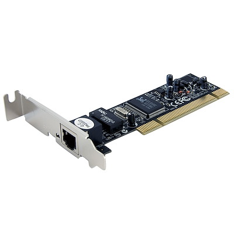
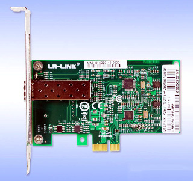
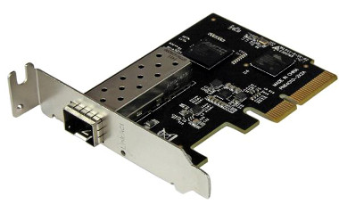

Las tarjetas de red son componentes que permiten a una computadora conectarse a una red, ya sea mediante cable o de forma inalámbrica. Su función principal es gestionar la comunicación entre el dispositivo y otros equipos dentro de una red local o a Internet. Existen dos tipos principales: las tarjetas de red cableadas (Ethernet), que se conectan a través de un cable RJ-45, y las tarjetas de red inalámbricas (Wi-Fi), que permiten la conexión a redes sin necesidad de cables.
Las tarjetas de red pueden variar en su velocidad de transmisión, que se mide en Mbps (megabits por segundo) y se clasifica en estándares como 10/100 Mbps (Fast Ethernet) y 1 Gbps (Gigabit Ethernet). En el caso de las tarjetas inalámbricas, se utilizan estándares como 802.11n, 802.11ac o 802.11ax (Wi-Fi 6), que ofrecen diferentes velocidades y capacidades de conexión. La elección de una tarjeta de red adecuada depende de las necesidades del usuario, como la velocidad de Internet requerida y el tipo de red disponible. Además, algunas tarjetas pueden ofrecer funciones adicionales como soporte para múltiples bandas de frecuencia, tecnologías de seguridad mejoradas y capacidades de gestión de red.
Las tarjetas de red se instalan en las placas madre a través de puertos PCIe o vienen integradas en la placa madre misma. Las características a considerar al elegir una tarjeta de red incluyen la velocidad de conexión, la compatibilidad con los estándares de red y la facilidad de instalación.
Marcas de tarjetas de red: Las marcas más reconocidas en el ámbito de las tarjetas de red incluyen TP-Link, conocida por su amplia gama de adaptadores y tarjetas de red confiables, como el modelo TL-WN881ND; ASUS, que ofrece productos de alta calidad y rendimiento, incluyendo la serie PCE-AC56; Intel, destacada por sus adaptadores de red con tecnología avanzada y compatibilidad robusta, como la serie Intel Wi-Fi 6 AX200; Realtek, que proporciona soluciones económicas y eficientes para diversas aplicaciones; y Netgear, conocida por sus productos de red de alto rendimiento, incluyendo adaptadores para gamers y aplicaciones empresariales.
Volver